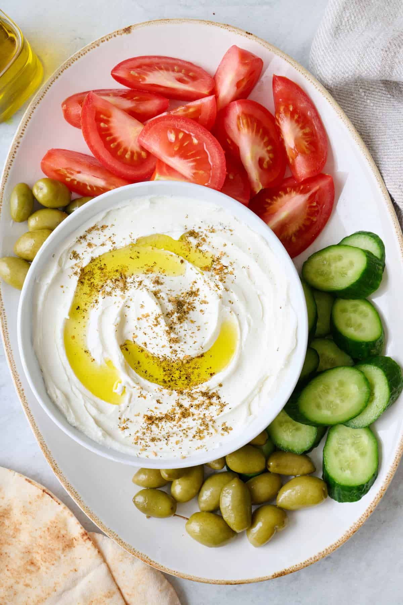

Labneh

Description
Labneh, pronounced “leb-nay,” is a savory yogurt cheese with Mediterranean roots. The word “labneh” comes from the Arabic word “laban,” meaning “white” or “milk.”
Also known as “labnah” or “labne,” it’s made by mixing yogurt with a little salt, then straining it to remove the whey. What’s left is a thick, creamy, and spreadable dip. It’s essentially an early phase of cheese, which is why we commonly refer to it as labneh cheese.
Ingredients
- Whole milk yogurt
- Salt
- Olive oil (addition)
- Black sesame (addition)
Steps
- Line a fine-mesh sieve with thick cheesecloth and set it over a bowl. Spoon the yogurt into the cheesecloth and sprinkle with salt.
- Stir to incorporate the salt.
- Tie the cheesecloth on the top and let the yogurt drain at room temperature or in the refrigerator for 24-72 hours.
- Open up the cheesecloth to reveal thick and creamy homemade labneh.
Home